{% include JB/setup %}
{% raw %}
<div>
<div class="calibre13"></div><div class="book" title="Chapter 14. Visual Effects in jQuery UI"><div class="book"><div class="book"><div class="book"><div class="calibre13"></div><h1 class="title1"><a id="visual_effects_in_jquery_ui" class="calibre1"></a>Chapter 14. Visual Effects in jQuery UI</h1></div></div></div><p class="calibre7">jQuery supports the use of basic visual effects, including management
  of the opacity and height of the elements, as well as the management of new
  effects using the <span class="firstname"><code class="literal">animate
  ()</code></span> method.</p><p class="calibre7">jQuery UI also provides the following:</p><div class="book"><ul class="itemizedlist"><li class="listitem"><p class="calibre7">New visual effects</p></li><li class="listitem"><p class="calibre7">Improvement of the <code class="literal">animate ()</code>
      method</p></li><li class="listitem"><p class="calibre7">The ability to use CSS classes to produce effects</p></li></ul></div><div class="book" title="New Visual Effects"><div class="book"><div class="book"><div class="book"><h1 class="title2"><a id="new_visual_effects" class="calibre1"></a>New Visual Effects</h1></div></div></div><p class="calibre7">In addition to the slideUp, slideDown, slideToggle, fadeIn, fadeOut,
    fadeTo, show, hide, and toggle effects available in standard jQuery,
    jQuery UI offers a range of new visual effects. All these effects can be
    used by calling the new <code class="literal">effect (effectName,
    options, duration, callback)</code> method, which works on jQuery class
    objects returned by <code class="literal">jQuery ()</code>.</p><div class="book" title="The effect (effectName, options, duration, callback) Method"><div class="book"><div class="book"><div class="book"><h2 class="title5"><a id="the_effect_open_parenthesis_effectname_c" class="calibre1"></a>The effect (effectName, options, duration, callback)
      Method</h2></div></div></div><p class="calibre7">The <code class="literal">effect (effectName, options,
      duration, callback)</code> method is used in the following
      form:</p><a id="I_programlisting14_d1e13593" class="firstname"></a><pre class="programlisting">$(selector, context).effect (effectName, options, duration, callback)</pre><p class="calibre7">This method allows us to produce the basic visual effects of
      jQuery UI. The parameters of the method are listed in <a class="ulink" href="ch14.html#the_effect_open_parenthesis_close_parent" title="Table 14-1. The effect () method parameters">Table 14-1</a> (only the first
      parameter is mandatory).</p><div class="table"><a id="the_effect_open_parenthesis_close_parent" class="firstname"></a><p class="title7">Table 14-1. The effect () method parameters</p><div class="book"><table summary="The effect () method parameters" class="calibre14"><colgroup class="calibre15"><col class="calibre16"/><col class="calibre16"/></colgroup><thead class="calibre17"><tr class="calibre18"><th valign="bottom" class="calibre19"><p class="calibre7">Parameter</p></th><th valign="bottom" class="calibre19"><p class="calibre7">Function</p></th></tr></thead><tbody class="calibre20"><tr class="calibre18"><td valign="top" class="calibre21"><p class="calibre7"><code class="literal">effectName</code></p></td><td valign="top" class="calibre21"><p class="calibre7">String corresponding to
              the effect name to use (<code class="literal">"blind"</code>, <code class="literal">"bounce"</code>, etc.).</p></td></tr><tr class="calibre22"><td valign="top" class="calibre21"><p class="calibre7"><code class="literal">options</code>callback () method called for
              each element when the effect is complete for this element. The
              this value in the function represents the DOM element for which
              the effect is complete.callback () method called for each
              element when the effect is complete for this element. The this
              value in the function represents the DOM element for which the
              effect is complete.</p>callback () method called for each
              element when the effect is complete for this element. The this
              value in the function represents the DOM element for which the
              effect is complete.callback () method called for each element
              when the effect is complete for this element. The this value in
              the function represents the DOM element for which the effect is
              complete.</td><td valign="top" class="calibre21"><p class="calibre7">Optional object to
              specify the behavior of the effect (e.g., <code class="literal">"hide"</code> or <code class="literal">"show"</code> in <code class="literal">options.mode</code>).</p></td></tr><tr class="calibre18"><td valign="top" class="calibre21"><p class="calibre7"><code class="literal">duration</code></p></td><td valign="top" class="calibre21"><p class="calibre7">Duration of the effect in
              milliseconds. Values <code class="literal">"slow"</code>
              and <code class="literal">"fast"</code> correspond to
              periods of 600 and 200 ms. The default duration is 400
              ms.</p></td></tr><tr class="calibre22"><td valign="top" class="calibre21"><p class="calibre7"><code class="literal">callback</code></p></td><td valign="top" class="calibre21"><p class="calibre7">Callback function called
              for each item in the list (items corresponding to the selector),
              when the effect is complete for that element. This is an
              optional parameter.</p></td></tr></tbody></table></div></div></div><div class="book" title="The blind Effect"><div class="book"><div class="book"><div class="book"><h2 class="title5"><a id="the_blind_effect" class="calibre1"></a>The blind Effect</h2></div></div></div><p class="calibre7">The <code class="literal">blind</code> effect can hide or
      display an item, making it disappear or appear in the indicated
      direction. Options for this effect are listed in <a class="ulink" href="ch14.html#options_for_managing_the_blind_effect" title="Table 14-2. Options for managing the blind effect">Table 14-2</a>.</p><div class="table"><a id="options_for_managing_the_blind_effect" class="firstname"></a><p class="title7">Table 14-2. Options for managing the blind effect</p><div class="book"><table summary="Options for managing the blind effect" class="calibre14"><colgroup class="calibre15"><col class="calibre16"/><col class="calibre16"/></colgroup><thead class="calibre17"><tr class="calibre18"><th valign="bottom" class="calibre19"><p class="calibre7">Option</p></th><th valign="bottom" class="calibre19"><p class="calibre7">Function</p></th></tr></thead><tbody class="calibre20"><tr class="calibre18"><td valign="top" class="calibre21"><p class="calibre7"><code class="literal">options.mode</code></p></td><td valign="top" class="calibre21"><p class="calibre7">Displays (<code class="literal">"show"</code>) or hides (<code class="literal">"hide"</code>) the element. The default value
              is <code class="literal">"hide"</code>.</p></td></tr><tr class="calibre22"><td valign="top" class="calibre21"><p class="calibre7"><code class="literal">options.direction</code></p></td><td valign="top" class="calibre21"><p class="calibre7">The direction (<code class="literal">"horizontal" or "vertical"</code>) that the
              element moves to or from when disappearing or appearing. The
              default value is <code class="literal">"vertical"</code>.</p></td></tr></tbody></table></div></div><p class="calibre7">In the following example, the first image disappears horizontally,
      while the second appears vertically. <a class="ulink" href="ch14.html#the_blind_effect_in_progress_colon_the_f" title="Figure 14-1. The blind effect in progress: the first image disappears horizontally and the second appears vertically">Figure 14-1</a> shows the effect
      in progress, and <a class="ulink" href="ch14.html#the_blind_effect_at_completion_colon_the" title="Figure 14-2. The blind effect at completion: the second image has replaced the first, which has completely disappeared">Figure 14-2</a> shows the end
      result:</p><a id="I_programlisting14_d1e13732" class="firstname"></a><pre class="programlisting">&lt;script src = jquery.js&gt;&lt;/script&gt;
&lt;script src = jqueryui/js/jquery-ui-1.8.16.custom.min.js&gt;&lt;/script&gt;

&lt;link rel=stylesheet type=text/css
      href=jqueryui/css/smoothness/jquery-ui-1.8.16.custom.css /&gt;

&lt;img id=img1 src=images/rails.jpg height=100 /&gt;&lt;br /&gt;
&lt;img id=img2 src=images/html.jpg height=100 /&gt;

&lt;script&gt;

<span class="firstname"><strong class="userinput">$("#img1").effect ("blind", { mode : "hide", direction : "horizontal" }, 10000);</strong></span>
<span class="firstname"><strong class="userinput">$("#img2").effect ("blind", { mode : "show", direction : "vertical" }, 10000);</strong></span>

&lt;/script&gt;</pre><div class="book"><div class="figure"><a id="the_blind_effect_in_progress_colon_the_f" class="firstname"></a><div class="book"><div class="book"><a id="I_mediaobject14_d1e13743" class="firstname"></a>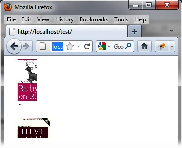</div></div><p class="title4">Figure 14-1. The blind effect in progress: the first image disappears
        horizontally and the second appears vertically</p></div></div><div class="book"><div class="figure"><a id="the_blind_effect_at_completion_colon_the" class="firstname"></a><div class="book"><div class="book"><a id="I_mediaobject14_d1e13751" class="firstname"></a>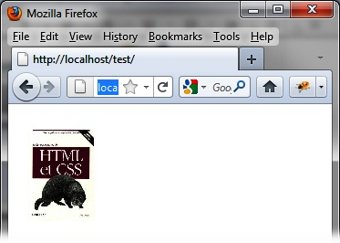</div></div><p class="title4">Figure 14-2. The blind effect at completion: the second image has replaced
        the first, which has completely disappeared</p></div></div></div><div class="book" title="The bounce Effect"><div class="book"><div class="book"><div class="book"><h2 class="title5"><a id="the_bounce_effect" class="calibre1"></a>The bounce Effect</h2></div></div></div><p class="calibre7">The <code class="literal">bounce</code> effect makes the
      element appear to bounce vertically or horizontally as it appears or
      disappears. Options for this effect are listed in <a class="ulink" href="ch14.html#options_for_managing_the_bounce_effect" title="Table 14-3. Options for managing the bounce effect">Table 14-3</a>.</p><div class="table"><a id="options_for_managing_the_bounce_effect" class="firstname"></a><p class="title7">Table 14-3. Options for managing the bounce effect</p><div class="book"><table summary="Options for managing the bounce effect" class="calibre14"><colgroup class="calibre15"><col class="calibre16"/><col class="calibre16"/></colgroup><thead class="calibre17"><tr class="calibre18"><th valign="bottom" class="calibre19"><p class="calibre7">Option</p></th><th valign="bottom" class="calibre19"><p class="calibre7">Function</p></th></tr></thead><tbody class="calibre20"><tr class="calibre18"><td valign="top" class="calibre21"><p class="calibre7"><code class="literal">options.mode</code></p></td><td valign="top" class="calibre21"><p class="calibre7">Displays (<code class="literal">"show"</code>) or hides (<code class="literal">"hide"</code>) the element. The default value
              is <code class="literal">"effect"</code>, which means that
              only the rebound effect is made, without the appearance or
              disappearance of the element.</p></td></tr><tr class="calibre22"><td valign="top" class="calibre21"><p class="calibre7"><code class="literal">options.direction</code></p></td><td valign="top" class="calibre21"><p class="calibre7">Direction of the rebound:
              <code class="literal">"up"</code> (the default), <code class="literal">"down"</code>, <code class="literal">"left"</code>, or <code class="literal">"right"</code>.</p></td></tr><tr class="calibre18"><td valign="top" class="calibre21"><p class="calibre7"><code class="literal">options.distance</code></p></td><td valign="top" class="calibre21"><p class="calibre7">Distance (in pixels)
              covered during each bounce. The default is 20
              pixels.</p></td></tr><tr class="calibre22"><td valign="top" class="calibre21"><p class="calibre7"><code class="literal">options.times</code></p></td><td valign="top" class="calibre21"><p class="calibre7">Number of bounces to
              perform. The default is 5.</p></td></tr></tbody></table></div></div></div><div class="book" title="The shake Effect"><div class="book"><div class="book"><div class="book"><h2 class="title5"><a id="the_shake_effect" class="calibre1"></a>The shake Effect</h2></div></div></div><p class="calibre7">The <code class="literal">shake</code> effect makes elements
      appear to shake vertically or horizontally as they <span class="firstname">appear</span> or disappear. Options for this effect
      are listed in <a class="ulink" href="ch14.html#options_for_managing_the_shake_effect" title="Table 14-4. Options for managing the shake effect">Table 14-4</a>.</p><div class="table"><a id="options_for_managing_the_shake_effect" class="firstname"></a><p class="title7">Table 14-4. Options for managing the shake effect</p><div class="book"><table summary="Options for managing the shake effect" class="calibre14"><colgroup class="calibre15"><col class="calibre16"/><col class="calibre16"/></colgroup><thead class="calibre17"><tr class="calibre18"><th valign="bottom" class="calibre19"><p class="calibre7">Option</p></th><th valign="bottom" class="calibre19"><p class="calibre7">Function</p></th></tr></thead><tbody class="calibre20"><tr class="calibre18"><td valign="top" class="calibre21"><p class="calibre7"><code class="literal">options.direction</code></p></td><td valign="top" class="calibre21"><p class="calibre7">Direction of
              oscillations: <code class="literal">"up"</code>, <code class="literal">"down"</code>, <code class="literal">"left"</code> (default) or <code class="literal">"right"</code>.</p></td></tr><tr class="calibre22"><td valign="top" class="calibre21"><p class="calibre7"><code class="literal">options.distance</code></p></td><td valign="top" class="calibre21"><p class="calibre7">Distance (in pixels)
              covered during each oscillation. The default is 20
              pixels.</p></td></tr><tr class="calibre18"><td valign="top" class="calibre21"><p class="calibre7"><code class="literal">options.times</code></p></td><td valign="top" class="calibre21"><p class="calibre7">Number of oscillations
              during the effect. The default is 3.</p></td></tr></tbody></table></div></div></div><div class="book" title="The clip Effect"><div class="book"><div class="book"><div class="book"><h2 class="title5"><a id="the_clip_effect" class="calibre1"></a>The clip Effect</h2></div></div></div><p class="calibre7">The <code class="literal">clip</code> effect shows or hides
      the element by scrolling horizontally or vertically. <span class="firstname">Options </span>for this effect are listed in <a class="ulink" href="ch14.html#options_for_managing_the_clip_effect" title="Table 14-5. Options for managing the clip effect">Table 14-5</a>.</p><div class="table"><a id="options_for_managing_the_clip_effect" class="firstname"></a><p class="title7">Table 14-5. Options for managing the clip effect</p><div class="book"><table summary="Options for managing the clip effect" class="calibre14"><colgroup class="calibre15"><col class="calibre16"/><col class="calibre16"/></colgroup><thead class="calibre17"><tr class="calibre18"><th valign="bottom" class="calibre19"><p class="calibre7">Option</p></th><th valign="bottom" class="calibre19"><p class="calibre7">Function</p></th></tr></thead><tbody class="calibre20"><tr class="calibre18"><td valign="top" class="calibre21"><p class="calibre7"><code class="literal">options.mode</code></p></td><td valign="top" class="calibre21"><p class="calibre7">Displays (<code class="literal">"show"</code>) or hides (<code class="literal">"hide"</code>) the element. The default value
              is <code class="literal">"hide"</code>.</p></td></tr><tr class="calibre22"><td valign="top" class="calibre21"><p class="calibre7"><code class="literal">options.direction</code></p></td><td valign="top" class="calibre21"><p class="calibre7">Horizontal direction
              (<code class="literal">"horizontal"</code>) or vertical
              direction (<code class="literal">"vertical"</code>) of the
              element’s <span class="firstname">appearance</span> or
              disappearance. The default value is <code class="literal">"vertical"</code>.</p></td></tr></tbody></table></div></div><p class="calibre7">In the following example, only the second book is visible, while
      the first is not <span class="firstname">(<a class="ulink" href="ch14.html#before_the_clip_effect_colon_only_the_se" title="Figure 14-3. Before the clip effect: only the second book is displayed">Figure 14-3</a>).</span> The
      effect is to remove the second book, while the first appears (<a class="ulink" href="ch14.html#during_the_clip_effect_colon_the_second" title="Figure 14-4. During the clip effect: the second book is disappearing, while the first appears">Figure 14-4</a>). At the end of the
      effect, the first book is the only one displayed (<a class="ulink" href="ch14.html#end_of_effect_colon_only_the_first_book" title="Figure 14-5. End of effect: only the first book is displayed">Figure 14-5</a>):</p><a id="I_programlisting14_d1e13975" class="firstname"></a><pre class="programlisting">&lt;script src = jquery.js&gt;&lt;/script&gt;
&lt;script src = jqueryui/js/jquery-ui-1.8.16.custom.min.js&gt;&lt;/script&gt;

&lt;link rel=stylesheet type=text/css
      href=jqueryui/css/smoothness/jquery-ui-1.8.16.custom.css /&gt;

&lt;img id=img1 src=images/rails.jpg height=100 /&gt;&lt;br /&gt;
&lt;img id=img2 src=images/html.jpg height=100 /&gt;

&lt;script&gt;

<span class="firstname"><strong class="userinput">$("#img1").effect ("clip", { mode : "show" }, 10000);</strong></span>
<span class="firstname"><strong class="userinput">$("#img2").effect ("clip", { mode : "hide" }, 10000);</strong></span>

&lt;/script&gt;</pre><div class="book"><div class="figure"><a id="before_the_clip_effect_colon_only_the_se" class="firstname"></a><div class="book"><div class="book"><a id="I_mediaobject14_d1e13986" class="firstname"></a>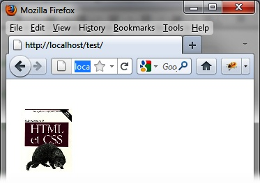</div></div><p class="title4">Figure 14-3. Before the clip effect: only the second book is
        displayed</p></div></div><div class="book"><div class="figure"><a id="during_the_clip_effect_colon_the_second" class="firstname"></a><div class="book"><div class="book"><a id="I_mediaobject14_d1e13994" class="firstname"></a>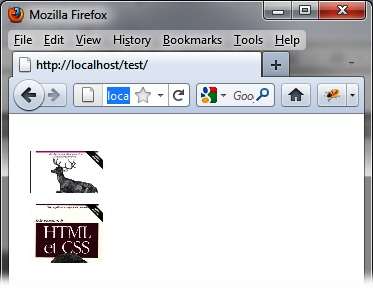</div></div><p class="title4">Figure 14-4. During the clip effect: the second book is disappearing, while
        the first appears</p></div></div><div class="book"><div class="figure"><a id="end_of_effect_colon_only_the_first_book" class="firstname"></a><div class="book"><div class="book"><a id="I_mediaobject14_d1e14002" class="firstname"></a>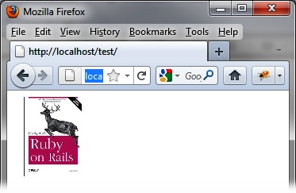</div></div><p class="title4">Figure 14-5. End of effect: only the first book is displayed</p></div></div></div><div class="book" title="The drop Effect"><div class="book"><div class="book"><div class="book"><h2 class="title5"><a id="the_drop_effect" class="calibre1"></a>The drop Effect</h2></div></div></div><p class="calibre7">The <code class="literal">drop</code> effect shows or hides
      the item by dragging and lowering its opacity. Options for this effect
      are listed in <a class="ulink" href="ch14.html#options_for_managing_the_drop_effect" title="Table 14-6. Options for managing the drop effect">Table 14-6</a>.</p><div class="table"><a id="options_for_managing_the_drop_effect" class="firstname"></a><p class="title7">Table 14-6. Options for managing the drop effect</p><div class="book"><table summary="Options for managing the drop effect" class="calibre14"><colgroup class="calibre15"><col class="calibre16"/><col class="calibre16"/></colgroup><thead class="calibre17"><tr class="calibre18"><th valign="bottom" class="calibre19"><p class="calibre7">Option</p></th><th valign="bottom" class="calibre19"><p class="calibre7">Function</p></th></tr></thead><tbody class="calibre20"><tr class="calibre18"><td valign="top" class="calibre21"><p class="calibre7"><code class="literal">options.mode</code></p></td><td valign="top" class="calibre21"><p class="calibre7">Displays (<code class="literal">"show"</code>) or hides (<code class="literal">"hide"</code>) the element. The default value
              is <code class="literal">"hide"</code>.</p></td></tr><tr class="calibre22"><td valign="top" class="calibre21"><p class="calibre7"><code class="literal">options.direction</code></p></td><td valign="top" class="calibre21"><p class="calibre7">Direction indicates the
              direction of movement <code class="literal">"up"</code>,
              <code class="literal">"down"</code>, <code class="literal">"left"</code> (default), or <code class="literal">"right"</code>.</p></td></tr><tr class="calibre18"><td valign="top" class="calibre21"><p class="calibre7"><code class="literal">options.distance</code></p></td><td valign="top" class="calibre21"><p class="calibre7">Distance (in pixels)
              covered by the element.</p></td></tr></tbody></table></div></div><p class="calibre7">Here is an example of using the <code class="literal">drop</code> effect. In this example, the first book
      appears and the second book disappears. The result is shown in <a class="ulink" href="ch14.html#the_drop_effect-id1" title="Figure 14-6. The drop effect">Figure 14-6</a>:</p><a id="I_programlisting14_d1e14084" class="firstname"></a><pre class="programlisting">&lt;script src = jquery.js&gt;&lt;/script&gt;
&lt;script src = jqueryui/js/jquery-ui-1.8.16.custom.min.js&gt;&lt;/script&gt;

&lt;link rel=stylesheet type=text/css
      href=jqueryui/css/smoothness/jquery-ui-1.8.16.custom.css /&gt;

&lt;img id=img1 src=images/rails.jpg height=100 /&gt;&lt;br /&gt;
&lt;img id=img2 src=images/html.jpg height=100 /&gt;

&lt;script&gt;

$("#img1").effect ("drop", { mode : "show" }, 1000);
$("#img2").effect ("drop", { mode : "hide" }, 1000);

&lt;/script&gt;</pre><div class="book"><div class="figure"><a id="the_drop_effect-id1" class="firstname"></a><div class="book"><div class="book"><a id="I_mediaobject14_d1e14089" class="firstname"></a>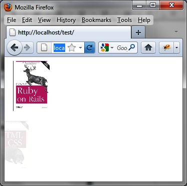</div></div><p class="title4">Figure 14-6. The drop effect</p></div></div></div><div class="book" title="The explode Effect"><div class="book"><div class="book"><div class="book"><h2 class="title5"><a id="the_explode_effect" class="calibre1"></a>The explode Effect</h2></div></div></div><p class="calibre7">The <code class="literal">explode</code> effect makes the
      element appear or disappear in a burst, as if it is exploding (see <a class="ulink" href="ch14.html#the_explode_effect-id1" title="Figure 14-7. The explode effect">Figure 14-7</a>). The options for this effect are
      listed in <a class="ulink" href="ch14.html#options_for_managing_the_explode_effect" title="Table 14-7. Options for managing the explode effect">Table 14-7</a>.</p><div class="table"><a id="options_for_managing_the_explode_effect" class="firstname"></a><p class="title7">Table 14-7. Options for managing the explode effect</p><div class="book"><table summary="Options for managing the explode effect" class="calibre14"><colgroup class="calibre15"><col class="calibre16"/><col class="calibre16"/></colgroup><thead class="calibre17"><tr class="calibre18"><th valign="bottom" class="calibre19"><p class="calibre7">Option</p></th><th valign="bottom" class="calibre19"><p class="calibre7">Function</p></th></tr></thead><tbody class="calibre20"><tr class="calibre18"><td valign="top" class="calibre21"><p class="calibre7"><code class="literal">options.mode</code></p></td><td valign="top" class="calibre21"><p class="calibre7">Specifies whether you
              want to display (<code class="literal">"show"</code>) or
              hide (<code class="literal">"hide"</code>) the element.
              The default value is <code class="literal">"hide"</code>.</p></td></tr><tr class="calibre22"><td valign="top" class="calibre21"><p class="calibre7"><code class="literal">options.pieces</code></p></td><td valign="top" class="calibre21"><p class="calibre7">The number of pieces of
              the burst element. The default is 9.</p></td></tr></tbody></table></div></div><a id="I_programlisting14_d1e14146" class="firstname"></a><pre class="programlisting">&lt;script src = jquery.js&gt;&lt;/script&gt;
&lt;script src = jqueryui/js/jquery-ui-1.8.16.custom.min.js&gt;&lt;/script&gt;

&lt;link rel=stylesheet type=text/css
      href=jqueryui/css/smoothness/jquery-ui-1.8.16.custom.css /&gt;

&lt;img id=img1 src=images/rails.jpg height=100 /&gt;&lt;br /&gt;
&lt;img id=img2 src=images/html.jpg height=100 /&gt;

&lt;script&gt;

<span class="firstname"><strong class="userinput">$("#img1").effect ("explode", { mode : "show" }, 1000);</strong></span>
<span class="firstname"><strong class="userinput">$("#img2").effect ("explode", { mode : "hide" }, 1000);</strong></span>

&lt;/script&gt;</pre><div class="book"><div class="figure"><a id="the_explode_effect-id1" class="firstname"></a><div class="book"><div class="book"><a id="I_mediaobject14_d1e14158" class="firstname"></a>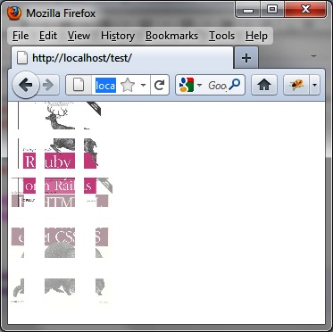</div></div><p class="title4">Figure 14-7. The explode effect</p></div></div></div><div class="book" title="The fold Effect"><div class="book"><div class="book"><div class="book"><h2 class="title5"><a id="the_fold_effect" class="calibre1"></a>The fold Effect</h2></div></div></div><p class="calibre7">The <code class="literal">fold</code> effect can show or
      hide the item by progressing horizontally, then vertically (or vice
      versa—the order is specified by <code class="literal">options.horizFirst</code>). The options for this
      effect are listed in <a class="ulink" href="ch14.html#options_for_managing_the_fold_effect" title="Table 14-8. Options for managing the fold effect">Table 14-8</a></p><div class="table"><a id="options_for_managing_the_fold_effect" class="firstname"></a><p class="title7">Table 14-8. Options for managing the fold effect</p><div class="book"><table summary="Options for managing the fold effect" class="calibre14"><colgroup class="calibre15"><col class="calibre16"/><col class="calibre16"/></colgroup><thead class="calibre17"><tr class="calibre18"><th valign="bottom" class="calibre19"><p class="calibre7">Option</p></th><th valign="bottom" class="calibre19"><p class="calibre7">Function</p></th></tr></thead><tbody class="calibre20"><tr class="calibre18"><td valign="top" class="calibre21"><p class="calibre7"><code class="literal">options.mode</code></p></td><td valign="top" class="calibre21"><p class="calibre7">Displays (<code class="literal">"show"</code>) or hides (<code class="literal">"hide"</code>) the element. The default value
              is <code class="literal">"hide"</code>.</p></td></tr><tr class="calibre22"><td valign="top" class="calibre21"><p class="calibre7"><span class="firstname"><code class="literal">options.horizFirst</code></span></p></td><td valign="top" class="calibre21"><p class="calibre7">When set to <code class="literal">true</code>, to the effect starts with
              horizontal progression, followed by vertical (the reverse occurs
              when this option is set to <code class="literal">false</code>). The default value is <code class="literal">false.</code></p></td></tr><tr class="calibre18"><td valign="top" class="calibre21"><p class="calibre7"><code class="literal">options.size</code></p></td><td valign="top" class="calibre21"><p class="calibre7">Indicates the number of
              pixels of the first progression (horizontal or vertical). The
              default value is 15 pixels.</p></td></tr></tbody></table></div></div><a id="I_programlisting14_d1e14233" class="firstname"></a><pre class="programlisting">&lt;script src = jquery.js&gt;&lt;/script&gt;
&lt;script src = jqueryui/js/jquery-ui-1.8.16.custom.min.js&gt;&lt;/script&gt;

&lt;link rel=stylesheet type=text/css
      href=jqueryui/css/smoothness/jquery-ui-1.8.16.custom.css /&gt;

&lt;img id=img1 src=images/rails.jpg height=100 /&gt;&lt;br /&gt;
&lt;img id=img2 src=images/html.jpg height=100 /&gt;

&lt;script&gt;

<span class="firstname"><strong class="userinput">$("#img1").effect ("fold", { mode : "show", horizFirst : true,</strong></span>
                             <span class="firstname"><strong class="userinput">size : 75 }, 1000);</strong></span>
<span class="firstname"><strong class="userinput">$("#img2").effect ("fold", { mode : "hide", size : 75 }, 1000);</strong></span>

&lt;/script&gt;</pre></div><div class="book" title="The highlight Effect"><div class="book"><div class="book"><div class="book"><h2 class="title5"><a id="the_highlight_effect" class="calibre1"></a>The highlight Effect</h2></div></div></div><p class="calibre7">The <code class="literal">highlight</code> effect can show
      or hide an element by changing its background color, as shown in Figures
      <a class="ulink" href="ch14.html#the_highlight_effect_colon_the_first_par" title="Figure 14-8. The highlight effect: the first paragraph disappears, while the second appears">14-8</a> and <a class="ulink" href="ch14.html#end_of_the_highlight_effect_colon_paragr" title="Figure 14-9. End of the highlight effect: paragraph 1 has disappeared to make room for paragraph 2">14-9</a>. The options for this effect are
      listed in <a class="ulink" href="ch14.html#options_for_managing_the_highlight_effec" title="Table 14-9. Options for managing the highlight effect">Table 14-9</a>.</p><div class="table"><a id="options_for_managing_the_highlight_effec" class="firstname"></a><p class="title7">Table 14-9. Options for managing the highlight effect</p><div class="book"><table summary="Options for managing the highlight effect" class="calibre14"><colgroup class="calibre15"><col class="calibre16"/><col class="calibre16"/></colgroup><thead class="calibre17"><tr class="calibre18"><th valign="bottom" class="calibre19"><p class="calibre7">Option</p></th><th valign="bottom" class="calibre19"><p class="calibre7">Function</p></th></tr></thead><tbody class="calibre20"><tr class="calibre18"><td valign="top" class="calibre21"><p class="calibre7"><code class="literal">options.mode</code></p></td><td valign="top" class="calibre21"><p class="calibre7">Displays (<code class="literal">"show"</code>) or hides (<code class="literal">"hide"</code>) the element. The default value
              is <code class="literal">"show"</code>.</p></td></tr><tr class="calibre22"><td valign="top" class="calibre21"><p class="calibre7"><code class="literal">options.color</code></p></td><td valign="top" class="calibre21"><p class="calibre7">Initial background color
              of the element, which will progress to get to the original
              background color.</p></td></tr></tbody></table></div></div><a id="I_programlisting14_d1e14298" class="firstname"></a><pre class="programlisting">&lt;script src = jquery.js&gt;&lt;/script&gt;
&lt;script src = jqueryui/js/jquery-ui-1.8.16.custom.min.js&gt;&lt;/script&gt;

&lt;link rel=stylesheet type=text/css
      href=jqueryui/css/smoothness/jquery-ui-1.8.16.custom.css /&gt;

&lt;p id=p1&gt; Paragraph 1 &lt;/p&gt;
&lt;p id=p2&gt; Paragraph 2 &lt;/p&gt;

&lt;script&gt;

<span class="firstname"><strong class="userinput">$("#p1").effect ("highlight", { mode : "hide", color : "black" }, 10000);</strong></span>
<span class="firstname"><strong class="userinput">$("#p2").effect ("highlight", { mode : "show", color : "black" }, 10000);</strong></span>

&lt;/script&gt;</pre><div class="book"><div class="figure"><a id="the_highlight_effect_colon_the_first_par" class="firstname"></a><div class="book"><div class="book"><a id="I_mediaobject14_d1e14309" class="firstname"></a>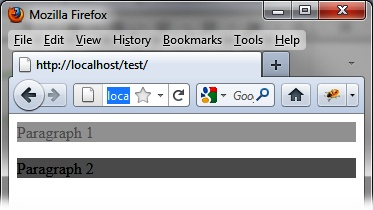</div></div><p class="title4">Figure 14-8. The highlight effect: the first paragraph disappears, while the
        second appears</p></div></div><p class="calibre7">In <a class="ulink" href="ch14.html#end_of_the_highlight_effect_colon_paragr" title="Figure 14-9. End of the highlight effect: paragraph 1 has disappeared to make room for paragraph 2">Figure 14-9</a>,
      the second paragraph is completely visible and has a white
      background.</p><div class="book"><div class="figure"><a id="end_of_the_highlight_effect_colon_paragr" class="firstname"></a><div class="book"><div class="book"><a id="I_mediaobject14_d1e14321" class="firstname"></a>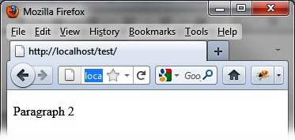</div></div><p class="title4">Figure 14-9. End of the highlight effect: paragraph 1 has disappeared to
        make room for paragraph 2</p></div></div></div><div class="book" title="The puff Effect"><div class="book"><div class="book"><div class="book"><h2 class="title5"><a id="the_puff_effect" class="calibre1"></a>The puff Effect</h2></div></div></div><p class="calibre7">The <code class="literal">puff</code> effect shows or hides
      the element by enlarging or shrinking it and changing its opacity. The
      options for this effect are listed in <a class="ulink" href="ch14.html#options_for_managing_the_puff_effect" title="Table 14-10. Options for managing the puff effect">Table 14-10</a>.</p><div class="table"><a id="options_for_managing_the_puff_effect" class="firstname"></a><p class="title7">Table 14-10. Options for managing the puff effect</p><div class="book"><table summary="Options for managing the puff effect" class="calibre14"><colgroup class="calibre15"><col class="calibre16"/><col class="calibre16"/></colgroup><thead class="calibre17"><tr class="calibre18"><th valign="bottom" class="calibre19"><p class="calibre7">Option</p></th><th valign="bottom" class="calibre19"><p class="calibre7">Function</p></th></tr></thead><tbody class="calibre20"><tr class="calibre18"><td valign="top" class="calibre21"><p class="calibre7"><code class="literal">options.mode</code></p></td><td valign="top" class="calibre21"><p class="calibre7">Displays (<code class="literal">"show"</code>) or hides (<code class="literal">"hide"</code>) the element. The default value
              is <code class="literal">"hide"</code>.</p></td></tr><tr class="calibre22"><td valign="top" class="calibre21"><p class="calibre7"><code class="literal">options.percent</code></p></td><td valign="top" class="calibre21"><p class="calibre7">Percentage magnification
              of the element (if <code class="literal">options.mode</code> is <code class="literal">"hide"</code>), or narrowing (finally
              arriving at its original size, if <code class="literal">options.mode</code> is <code class="literal">"show"</code>). The default is
              150%.</p></td></tr></tbody></table></div></div><p class="calibre7">In this example, the first book appears by returning to its normal
      size, while the second gets bigger as it disappears. The result is shown
      in <a class="ulink" href="ch14.html#the_puff_effect-id1" title="Figure 14-10. The puff effect">Figure 14-10</a>:</p><a id="I_programlisting14_d1e14394" class="firstname"></a><pre class="programlisting">&lt;script src = jquery.js&gt;&lt;/script&gt;
&lt;script src = jqueryui/js/jquery-ui-1.8.16.custom.min.js&gt;&lt;/script&gt;

&lt;link rel=stylesheet type=text/css
      href=jqueryui/css/smoothness/jquery-ui-1.8.16.custom.css /&gt;

&lt;img id=img1 src=images/rails.jpg height=100 /&gt;&lt;br /&gt;
&lt;img id=img2 src=images/html.jpg height=100 /&gt;

&lt;script&gt;

<span class="firstname"><strong class="userinput">$("#img1").effect ("puff", { mode : "show" }, 1000);</strong></span>
<span class="firstname"><strong class="userinput">$("#img2").effect ("puff", { mode : "hide" }, 1000);</strong></span>

&lt;/script&gt;</pre><div class="book"><div class="figure"><a id="the_puff_effect-id1" class="firstname"></a><div class="book"><div class="book"><a id="I_mediaobject14_d1e14405" class="firstname"></a>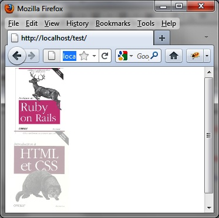</div></div><p class="title4">Figure 14-10. The puff effect</p></div></div></div><div class="book" title="The pulsate Effect"><div class="book"><div class="book"><div class="book"><h2 class="title5"><a id="the_pulsate_effect" class="calibre1"></a>The pulsate Effect</h2></div></div></div><p class="calibre7">The <code class="literal">pulsate</code> effect causes the
      element to flash. The number of flashes (default 5) is specified using
      the <code class="literal">options.times</code> option. Each blink
      corresponds to the duration of the effect:</p><a id="I_programlisting14_d1e14421" class="firstname"></a><pre class="programlisting">&lt;script src = jquery.js&gt;&lt;/script&gt;
&lt;script src = jqueryui/js/jquery-ui-1.8.16.custom.min.js&gt;&lt;/script&gt;

&lt;link rel=stylesheet type=text/css
      href=jqueryui/css/smoothness/jquery-ui-1.8.16.custom.css /&gt;

&lt;img id=img1 src=images/rails.jpg height=100 /&gt;&lt;br /&gt;
&lt;img id=img2 src=images/html.jpg height=100 /&gt;

&lt;script&gt;

<span class="firstname"><strong class="userinput">$("#img1").effect ("pulsate", { times : 2 }, 1000);</strong></span>
<span class="firstname"><strong class="userinput">$("#img2").effect ("pulsate", { times : 5 }, 1000);</strong></span>

&lt;/script&gt;</pre></div><div class="book" title="The scale Effect"><div class="book"><div class="book"><div class="book"><h2 class="title5"><a id="the_scale_effect" class="calibre1"></a>The scale Effect</h2></div></div></div><p class="calibre7">The <code class="literal">scale</code> effect enlarges or
      shrinks the element. It can also make the element appear or disappear,
      depending on the option indicated in <code class="literal">options.mode</code>. The options for this effect are
      listed in <a class="ulink" href="ch14.html#options_for_managing_the_scale_effect" title="Table 14-11. Options for managing the scale effect">Table 14-11</a>.</p><div class="table"><a id="options_for_managing_the_scale_effect" class="firstname"></a><p class="title7">Table 14-11. Options for managing the scale effect</p><div class="book"><table summary="Options for managing the scale effect" class="calibre14"><colgroup class="calibre15"><col class="calibre16"/><col class="calibre16"/></colgroup><thead class="calibre17"><tr class="calibre18"><th valign="bottom" class="calibre19"><p class="calibre7">Option</p></th><th valign="bottom" class="calibre19"><p class="calibre7">Function</p></th></tr></thead><tbody class="calibre20"><tr class="calibre18"><td valign="top" class="calibre21"><p class="calibre7"><code class="literal">options.mode</code></p></td><td valign="top" class="calibre21"><p class="calibre7">Displays (<code class="literal">"show"</code>) or hides (<code class="literal">"hide"</code>) the element. The default value
              is <code class="literal">"effect"</code>, (only the
              scaling effect is performed, without the appearance or
              disappearance of the element).</p></td></tr><tr class="calibre22"><td valign="top" class="calibre21"><p class="calibre7"><span class="firstname"><code class="literal">options.direction</code></span></p></td><td valign="top" class="calibre21"><p class="calibre7">Indicates the direction
              of resizing: <code class="literal">"horizontal"</code>,
              <code class="literal">"vertical"</code>, or <code class="literal">"both"</code>. The default is <code class="literal">"both"</code>.</p></td></tr><tr class="calibre18"><td valign="top" class="calibre21"><p class="calibre7"><code class="literal">options.from</code></p></td><td valign="top" class="calibre21"><p class="calibre7">A <code class="literal">{width, height}</code> object indicating the
              original dimensions of the element. By default, the current size
              of the element is taken as the original
              dimensions.</p></td></tr><tr class="calibre22"><td valign="top" class="calibre21"><p class="calibre7"><code class="literal">options.percent</code></p></td><td valign="top" class="calibre21"><p class="calibre7">Percentage to magnify (if
              greater than 100) or shrink (if less than 100). The default is 0
              if <code class="literal">options.mode</code> is <code class="literal">"hide"</code>, or 100 if <code class="literal">options.mode</code> is <code class="literal">"show"</code>.</p></td></tr><tr class="calibre18"><td valign="top" class="calibre21"><p class="calibre7"><code class="literal">options.fade</code></p></td><td valign="top" class="calibre21"><p class="calibre7">When set to <code class="literal">true</code>, changes the opacity of the
              element when resizing. The default value is <code class="literal">false.</code></p></td></tr></tbody></table></div></div><a id="I_programlisting14_d1e14539" class="firstname"></a><pre class="programlisting">&lt;script src = jquery.js&gt;&lt;/script&gt;
&lt;script src = jqueryui/js/jquery-ui-1.8.16.custom.min.js&gt;&lt;/script&gt;

&lt;link rel=stylesheet type=text/css
      href=jqueryui/css/smoothness/jquery-ui-1.8.16.custom.css /&gt;

&lt;img id=img1 src=images/rails.jpg height=100 /&gt;&lt;br /&gt;
&lt;img id=img2 src=images/html.jpg height=100 /&gt;

&lt;script&gt;

<span class="firstname"><strong class="userinput">$("#img1").effect ("scale", { mode : "show" }, 10000);</strong></span>
<span class="firstname"><strong class="userinput">$("#img2").effect ("scale", { mode : "hide" }, 10000);</strong></span>

&lt;/script&gt;</pre></div><div class="book" title="The size Effect"><div class="book"><div class="book"><div class="book"><h2 class="title5"><a id="the_size_effect" class="calibre1"></a>The size Effect</h2></div></div></div><p class="calibre7">Rather than expanding in the same proportions as height and width
      as allowed by the <code class="literal">scale</code> effect, the
      <code class="literal">size</code> effect applies a new height and
      width to the element. This is done using <code class="literal">options.to</code> with a {<code class="literal">width, height}</code> object. If either the <code class="literal">width</code> or <code class="literal">height</code> property is not indicated in <code class="literal">options.to</code>, the element is not expanded in
      that direction (width or height). Options for this effect are listed in
      <a class="ulink" href="ch14.html#options_for_managing_the_size_effect" title="Table 14-12. Options for managing the size effect">Table 14-12</a>.</p><div class="table"><a id="options_for_managing_the_size_effect" class="firstname"></a><p class="title7">Table 14-12. Options for managing the size effect</p><div class="book"><table summary="Options for managing the size effect" class="calibre14"><colgroup class="calibre15"><col class="calibre16"/><col class="calibre16"/></colgroup><thead class="calibre17"><tr class="calibre18"><th valign="bottom" class="calibre19"><p class="calibre7">Option</p></th><th valign="bottom" class="calibre19"><p class="calibre7">Function</p></th></tr></thead><tbody class="calibre20"><tr class="calibre18"><td valign="top" class="calibre21"><p class="calibre7"><code class="literal">options.from</code></p></td><td valign="top" class="calibre21"><p class="calibre7">A <code class="literal">{width, height}</code> object indicating the
              original dimensions of the element. By default, the current size
              of the element is taken as the original
              dimensions.</p></td></tr><tr class="calibre22"><td valign="top" class="calibre21"><p class="calibre7"><code class="literal">options.to</code></p></td><td valign="top" class="calibre21"><p class="calibre7">A <code class="literal">{width, height}</code> object indicating the
              final dimensions of the element. By default, the current size of
              the element is taken as the final dimensions.</p></td></tr></tbody></table></div></div><p class="calibre7">For example, to expand our image to 300 pixels in width, keeping a
      height of 100 pixels (see <a class="ulink" href="ch14.html#the_size_effect-id1" title="Figure 14-11. The size effect">Figure 14-11</a>), we
      write the following code:</p><a id="I_programlisting14_d1e14617" class="firstname"></a><pre class="programlisting">&lt;script src = jquery.js&gt;&lt;/script&gt;
&lt;script src = jqueryui/js/jquery-ui-1.8.16.custom.min.js&gt;&lt;/script&gt;

&lt;link rel=stylesheet type=text/css
      href=jqueryui/css/smoothness/jquery-ui-1.8.16.custom.css /&gt;

&lt;img id=img1 src=images/rails.jpg height=100 /&gt;&lt;br /&gt;

&lt;script&gt;

<span class="firstname"><strong class="userinput">$("#img1").effect ("size", { to : { width : 300 } }, 1000);</strong></span>

&lt;/script&gt;</pre><div class="book"><div class="figure"><a id="the_size_effect-id1" class="firstname"></a><div class="book"><div class="book"><a id="I_mediaobject14_d1e14625" class="firstname"></a>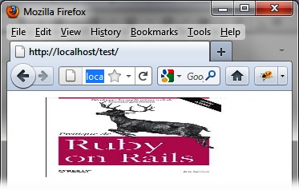</div></div><p class="title4">Figure 14-11. The size effect</p></div></div></div><div class="book" title="The slide Effect"><div class="book"><div class="book"><div class="book"><h2 class="title5"><a id="the_slide_effect" class="calibre1"></a>The slide Effect</h2></div></div></div><p class="calibre7">The <code class="literal">slide</code> effect shows or hides
      the item by sliding it across the screen. Options for this effect are
      listed in <a class="ulink" href="ch14.html#options_for_managing_the_slide_effect" title="Table 14-13. Options for managing the slide effect">Table 14-13</a>.</p><div class="table"><a id="options_for_managing_the_slide_effect" class="firstname"></a><p class="title7">Table 14-13. Options for managing the slide effect</p><div class="book"><table summary="Options for managing the slide effect" class="calibre14"><colgroup class="calibre15"><col class="calibre16"/><col class="calibre16"/></colgroup><thead class="calibre17"><tr class="calibre18"><th valign="bottom" class="calibre19"><p class="calibre7">Option</p></th><th valign="bottom" class="calibre19"><p class="calibre7">Function</p></th></tr></thead><tbody class="calibre20"><tr class="calibre18"><td valign="top" class="calibre21"><p class="calibre7"><code class="literal">options.mode</code></p></td><td valign="top" class="calibre21"><p class="calibre7">Displays (<code class="literal">"show"</code>) or hides (<code class="literal">"hide"</code>) the element. The default value
              is <code class="literal">"hide"</code>.</p></td></tr><tr class="calibre22"><td valign="top" class="calibre21"><p class="calibre7"><code class="literal">options.direction</code></p></td><td valign="top" class="calibre21"><p class="calibre7">Indicates the direction
              of movement: <code class="literal">"up"</code>, <code class="literal">"down"</code>, <code class="literal">"left"</code>, (default) or <code class="literal">"right"</code>.</p></td></tr><tr class="calibre18"><td valign="top" class="calibre21"><p class="calibre7"><code class="literal">options.distance</code></p></td><td valign="top" class="calibre21"><p class="calibre7">Distance (in pixels)
              covered by the element. The default is the height of the element
              (if <code class="literal">options.direction</code> is
              <code class="literal">"up"</code> or <code class="literal">"down"</code>) or the width of the element
              (if <span class="firstname"><code class="literal">options.direction</code></span> is <code class="literal">"left"</code> or <code class="literal">"right"</code>).</p></td></tr></tbody></table></div></div><p class="calibre7">For example, to display the first book while making disappear the
      second, we write the following code:</p><a id="I_programlisting14_d1e14722" class="firstname"></a><pre class="programlisting">&lt;script src = jquery.js&gt;&lt;/script&gt;
&lt;script src = jqueryui/js/jquery-ui-1.8.16.custom.min.js&gt;&lt;/script&gt;

&lt;link rel=stylesheet type=text/css
      href=jqueryui/css/smoothness/jquery-ui-1.8.16.custom.css /&gt;

&lt;img id=img1 src=images/rails.jpg height=100 /&gt;&lt;br /&gt;
&lt;img id=img2 src=images/html.jpg height=100 /&gt;

&lt;script&gt;

<span class="firstname"><strong class="userinput">$("#img1").effect ("slide", { mode : "show" }, 10000);</strong></span>
<span class="firstname"><strong class="userinput">$("#img2").effect ("slide", { mode : "hide" }, 10000);</strong></span>

&lt;/script&gt;</pre></div></div></div></div>

{% endraw %}

